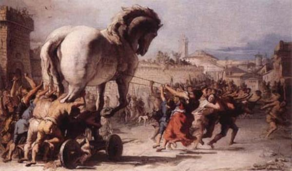

Cuộc Chiến tranh Troie kéo dài đã mười năm. Từ khi Ulysse xuất hiện như một vị tướng tài giỏi nhất trong Hội đồng Tướng lĩnh thì cuộc chiến tranh dưới sự chỉ huy của chàng được tiến hành theo một hướng khác. Chàng không như Achille chỉ nhất nhất dùng sức mạnh của quân nhiều tướng giỏi vây hãm, công kích thành Troie. Chàng chủ trương phải dùng mưu. Xưa kia khi Achille còn sống, đã có lần hai người, trong một bữa tiệc, tranh cãi nhau rất gay gắt về cách tiến hành chiến tranh. Ulysse cho rằng muốn hạ được thành Troie mà chỉ dùng sức mạnh của quân sĩ và binh khí không thôi thì không thể nào thành công được. Phải dùng mưu, phải biết dùng mưu sâu kế hiểm, dụ địch, lừa địch thì mới có thể hy vọng giành thắng lợi. Nhưng Achille chống lại chủ trương đó, cho rằng không thể tiến hành chiến tranh bằng cách lừa dối được. Phải dùng sức mạnh, và chỉ có thể dùng sức mạnh mà thôi. Mưu mẹo, lừa lọc là xấu xa, là không cao thượng. Quân Hy Lạp suốt mười năm trời đã tiến hành chiến tranh theo cách của Achille, và suốt mười năm đó, quân Troie tuy có bị tổn thất nặng nề nhưng thành Troie vẫn đứng sừng sững uy nghi với những bức tường thành cao ngất như thách thức quân Hy Lạp.
Bây giờ đến lúc Ulysse phải thanh toán sự thách thức, kiêu ngạo ấy. Chàng quyết định dùng mưu để hạ thành Troie, phải dùng một kế hiểm để lừa quân Troie thì mới hy vọng hạ nổi cái đô thành cao ngất, vững chãi, rộng lớn và giàu có này. Chính nhà tiên tri tài giỏi Calchas cũng khuyên quân Hy Lạp nên dùng mưu để tiến hành chiến tranh, bởi vì thần Zeus đã giáng xuống một điềm báo ngụ ý như thế. Sau nhiều đêm suy nghĩ thao thức, Ulysse nghĩ ra một kế hiểm. Chàng tường trình với Hội đồng Tướng lĩnh: đóng một con ngựa gỗ thật to, cho quân cảm tử vào trong bụng ngựa, sau đó quân Hy Lạp giả rút lui để lại con ngựa trên bãi chiến trường, bày mưu lừa quân Troie để chúng đưa con ngựa vào trong thành, quân cảm tử sẽ từ trong bụng ngựa chui ra giết quân canh, mở cổng thành cho đại binh quay trở lại, đổ bộ, tiến vào thành. Không một ai phản bác mưu kế này của Ulysse cả. Ngược lại, mọi người còn tin chắc rằng chỉ có dùng mưu như thế mới mong hạ nổi thành Troie.
Quân Hy Lạp bắt tay vào công việc. Danh tướng Épéios, một người nổi tiếng vì có nhiều sáng kiến và có bàn tay thợ khéo léo được giao nhiệm vụ đóng con ngựa gỗ khổng lồ. Nhà tiên tri Prylis con của thần Hermès, vốn là người biết tài năng của Épeios nên đã tiến cử chàng với Hội đồng Tướng lĩnh. Quả là danh bất hư truyền, Épeios chỉ huy quân Hy Lạp đốn gỗ, xẻ ván, đóng ghép rất tài tình, đâu vào đấy răm rắp như khi chàng chỉ huy đạo quân ba mươi chiến thuyền của chàng đổ bộ lên đất Troie. Thật ra chủ trương của Ulysse không phải được chấp nhận dễ dàng như ta kể đâu. Các chủ tướng Hy Lạp đã bàn đi tính lại đủ mọi phương diện và cũng có không ít người lúc đầu tỏ vẻ không tin và không chấp thuận mưu chước của Ulysse. Nhưng Ulysse đã thuyết phục được tất cả, và tất cả sau khi nghe ra đều nhất trí tán thưởng chủ trương của Ulysse.

Nhưng mới xong được việc đầu tiên. Ulysse lại phải đột nhập vào thành Troie một lần nữa. Lần này chàng giả làm một tên lính Hy Lạp bị bạc đãi, mình mẩy bị đánh đập thâm tím, mặt sưng húp, những vết máu trên người còn chưa khô. Tên lính này chạy sang hàng ngũ quân Troie cầu xin sự che chở. Hắn khai hắn bị Ulysse ngược đãi, ức hiếp khiến hắn không thể nào sống nổi trong hàng ngũ quân Hy Lạp. Quân Troie tưởng thật, đón nhận ngay tên hàng binh đó. Thế là Ulysse tìm cách lẻn đến gặp Hélène, nói cho nàng biết kế sách của quân Hy Lạp giả vờ hồi hương nhưng mai phục ở một vùng biển kín đáo gần đây. Khi quân Troie đưa con ngựa gỗ vào thành thì Hélène, vào lúc trời sẩm tối, phải lên ngay bờ thành cao đốt một đống lửa to làm tín hiệu. Nhìn thấy ánh lửa đó tức khắc các chiến thuyền của đại quân lao nhanh về vùng đồng bằng Troade, đổ quân lên bờ. Trong khi đó quân cảm tử từ trong bụng ngựa chui ra, giết quân canh, mở cổng thành. Nội công ngoại kích, trong đánh ra, ngoài đánh vào như vậy phần thắng có thể cầm chắc. Thành Troie bị đánh bất ngờ như thế chắc không thể nào chống đỡ nổi.
Hélène nghe xong, lòng những nửa mừng nửa lo. Còn Ulysse, chàng phải trở về ngay doanh trại quân Hy Lạp để tiếp tục thực thi kế sách của mình.
Con ngựa gỗ khổng lồ đã làm xong. Épeios được nữ thần Athéna giúp đỡ đã đóng xong một con ngựa gỗ tuyệt đẹp. Bây giờ chỉ còn việc mời các chiến sĩ cảm tử chui vào nằm trong bụng ngựa. Trong số những chiến sĩ đó ta thấy có Ulysse, Ménélas, Philoctète, Diomède, Ajax Bé con của Oïlée, Idoménée, Mérion và Néoptolème, v.v.
Một buổi sáng kia khi nàng Rạng đông có đôi má ửng hồng vừa đặt những bước chân nhẹ nhàng lên mặt biển nhoẻn nụ cười sáng chào đón thế gian thì từ trên bờ thành cao của quân Troie, các tướng sĩ, chiến binh nhìn xuống chiến địa bỗng thấy một cảnh tượng rất đỗi lạ lùng. Họ tưởng như không tin vào mắt mình nữa. Chiến trường vắng bặt bóng quân Hy Lạp, vắng tanh, vắng ngắt. Chỉ còn lại lác đác một số ít đang nhổ trại để đưa xuống dăm ba con thuyền đang chờ ở bờ biển. Bọn này trước khi đi đã đốt hết những gì mà chúng không đem theo được. Thì ra đại quân của chúng đã bí mật cuốn gói rút lui từ đêm hôm trước rồi. Đây chỉ là toán rút cuối cùng. Nhưng trên bãi chiến trường hoang vắng, ngoài những đống lửa đang bừng bừng thiêu cháy những lều trại, quân Hy Lạp bỏ lại một con vật kỳ lạ. Đó là một con ngựa gỗ khổng lồ, một con ngựa đồ sộ, cao ngất tưởng như muốn sánh mình với những bức tường hùng vĩ của thành Troie. Những người Troie đứng trên bờ thành cao tưởng như vừa trải qua một cơn ác mộng. Thế là cuộc chiến tranh núi xương sông máu này tưởng chừng như vô cùng vô tận lại có ngày chấm dứt, chấm dứt một cách không ai ngờ được như thế này. Lại một lần nữa, nữ thần Até-Lầm lẫn làm cho những người Troie phạm sai lầm. Những người Troie loan báo cho nhau biết cái tin vui đó. Thế là mọi người trong thành chạy ùa ra ngoài bờ biển ca hát, reo hò. Họ kéo đến vây quanh lấy con ngựa gỗ khổng lồ ngắm nghía, xem xét, bàn tán. Người thì bảo nên đẩy nó xuống biển, người thì bảo châm cho nó một mồi lửa, kẻ thì lại khuyên nên đưa nó vào trong thành đặt ở quảng trường để ghi nhớ chiến công vĩ đại của người Troie. Đang khi mọi người bàn cãi thì bỗng nổi lên tiếng quát tháo, chửi rủa ầm ầm. Thì ra có người tìm được trong một bụi cây gần đấy một tên lính Hy Lạp. Đó là một tên lính Hy Lạp bị đồng đội bỏ rơi. Người ta xông đến chửi bới, đánh đập tên lính không tiếc tay, tiếc lời. Người ta giải tên lính đến trình lão vương Priam, nhà vua trị vì thành Troie. Priam ra lệnh xét hỏi. Nhưng tên lính mặt tái xanh tái xám đi vì sợ hãi, vì đau đớn cứ ấp a ấp úng không nói được nên lời. Dọa nạt, dụ dỗ, gạn hỏi mãi hắn mới nói, hắn mới hứa xin cung khai hết, cung khai thật đầy đủ, không giấu giếm một tí gì, song chỉ xin lão vương Priam và thần dân Troie sinh phúc tha tội cho hắn. Tất nhiên lão vương Priam sẵn sàng rộng lượng đối với một tên tiểu tốt vô danh.
Hắn khai tên hắn là Sinon. Theo lời Sinon kể thì, hắn bị Ulysse, ngược đãi ức hiếp đủ đường. Sở dĩ Ulysse thù ghét hắn như thế là vì hắn là người có họ hàng máu mủ, bà con với Palamède. Chúng ta chắc chưa ai quên Palamède, người anh hùng đã bằng đầu óc sáng suốt của mình phát hiện ra cái trò giả vờ điên của Ulysse để trốn tránh khỏi phải tham dự cuộc Chiến tranh Troie, và vì thế đã bị Ulysse trả thù lập mưu vu cáo là phản bội, tư thông với quân địch đến nỗi bị xử tử oan uổng.
Tệ hại hơn nũa, Ulysse còn mưu toan giết Sinon. Khi quân Hy Lạp định từ bỏ cuộc vây hãm thành Troie, hồi hương, thì Ulysse bảo nhà tiên tri Calchas phải làm một lễ hiến tế thần linh cầu xin cho hành trình trở về được thuận buồm xuôi gió. Nhưng vật hiến tế không phải là dê, cừu, bò, ngựa... mà phải là một người, một chiến binh Hy Lạp trai trẻ, khỏe mạnh. Lệnh Ulysse ban ra như vậy, Calchas không dám bác bỏ. Nhưng ai sẽ là vật hy sinh trong lễ hiến tế này? Đó là điều Calchas băn khoăn. Nhưng Ulysse đã áp đặt ngay cho Calchas biện pháp thi hành. Calchas phải nhân danh quyền uy của mình và thần thánh đòi hỏi, chỉ định Sinon. Sinon phải là người làm vật hiến tế cho thần linh. Tuân theo lời phán truyền của thần thánh, quân Hy Lạp bắt trói Sinon lại chờ lệnh ban ra là dẫn Sinon đến trước bàn thờ. Nhưng may sao, Sinon lợi dụng sơ hở của quân Hy Lạp gỡ được dây trói, trốn tránh, chui vào nấp trong một bụi cây.
Lão vương Priam nghe xong liền quát hỏi:
- Được, được! Ta tạm coi như nhà ngươi đã khai báo thành thật. Thế nhưng còn chuyện con ngựa gỗ to tướng kia là duyên cớ làm sao? Vì sao quân Hy Lạp lại bỏ lại trên chiến trường một vật quý giá, kỳ công như vậy? Nhà ngươi muốn được ta mở lượng khoan hồng hãy khai báo trung thực rõ ràng. Nếu không đừng trách ta là người tàn ác.
Sinon lại ngoan ngoãn khai báo. Nguyên do là trước kia quân Hy Lạp đã có lần đột nhập vào nội thành ăn cắp bức tượng thần hộ mệnh Palladion, bảo vật của thành Troie. Hành động đó đã gây nên sự tức giận của nữ thần Athéna. Nhà tiên tri Calchas phát hiện thấy trên bầu trời nhiều điềm gở chứng tỏ nữ thần Athéna đang nổi cơn thịnh nộ. Muốn tránh khỏi đòn trừng phạt, những tai ương chướng họa giáng xuống đầu quân Hy Lạp, quân Hy Lạp phải lập tức bồi thường một báu vật thay cho tượng Palladion. Báu vật đó, theo nhà tiên tri Calchas phán truyền, phải là một con ngựa gỗ. Con ngựa gỗ này sẽ được tôn thờ như một vị thần hộ mệnh của thành Troie. Nhưng đáng ra phải làm một con ngựa gỗ với kích thước vừa phải thì người Hy Lạp lại làm một con ngựa gỗ thật to, to đến mức sao cho người Troie không đưa được vào trong thành, và như vậy, theo mưu tính của người Hy Lạp, thành Troie sẽ không còn tượng thần hộ mệnh và quân Hy Lạp mới hy vọng trong cuộc viễn chinh sau này sẽ kết thúc được số phận thành Troie.
Đó là tất cả lời khai của Sinon, nhưng là một lời khai bịa đặt do Ulysse tạo dựng, bày đặt. Nhưng người Troie lại tin rằng Sinon nói thật. Lão vương Priam suy tính; nếu âm mưu của họ là làm cho ta không đưa được con ngựa gỗ vào thành, để không có thần hộ mệnh thì ta phải phá bằng được âm mưu đó. Ta sẽ đưa bằng được con ngựa gỗ vào trong thành, và lão vương lớn tiếng truyền phán chỉ lệnh cho con dân thành Troie:
- Hỡi thần dân Troie! Hỡi ba quân người Hy Lạp đã can tội lấy trộm của đô thành chúng ta bức tượng thần hộ mệnh Palladion. Các vị thần Olympe coi đó là một hành động phạm thượng. Để tránh đòn trừng phạt của thánh thần, họ đền bồi lại cho chúng ta con ngựa gỗ này đây. Chúng bày mưu sâu kế hiểm những tính toán rằng chúng ta phải chịu bó tay trước con vật khổng lồ mà họ làm ra, vì thế thành Troie hùng cường của chúng ta sẽ không có tượng thần hộ mệnh sẽ chẳng có thần thánh bảo hộ. Nhờ thế bọn chúng sẽ ngày một ngày hai trở lại vùng đồng bằng này và chỉ bằng vài trận giao tranh sẽ san bằng đô thành của chúng ta, đô thành Troie hùng vĩ giàu có, danh tiếng lẫy lừng của chúng ta. Nhưng chúng đã lầm. Thành Troie không bao giờ lại cam chịu là một đô thành không có tượng thần hộ mệnh. Hỡi thần dân! Hỡi ba quân! Hãy phá ngay một mảng tường thành và huy động mọi người kéo con ngựa gỗ vào quảng trường.
Lão vương Priam vừa dứt lời thì lập tức Laocoon, một viên tư tế của thần Apollon, xông ra can ngăn mọi người lại. Laocoon khuyên mọi người hãy đề phòng kẻo trúng kế của Ulysse, một tướng nổi danh là con người xảo trá, lừa lọc. Nhưng chẳng ai nghe lời khuyên của ông già tư tế. Người ta gạt phăng ông ta và bắt tay vào việc. Cực chẳng đã, ông liền giật lấy một ngọn lao và phóng thẳng vào bụng con ngựa gỗ. Ngọn lao đâm vào mặt gỗ rắn không xuyên thủng được và cũng chẳng cắm chặt được. Lao bật nảy ra làm vang lên một âm thanh rền rĩ, ngân nga chứ không khô khốc, ngắn gọn. Điều đó chứng tỏ con ngựa là một vật rỗng. Hơn nữa lại nghe thấy dường như có tiếng va chạm lích kích của kim khí. Tưởng thế thì quân Troie phải xem xét lại kỹ lưỡng con ngựa rồi mới đưa vào thành. Nhưng chẳng ai để ý lắng nghe được cái âm thanh ấy, và cũng chẳng ai hiểu được việc làm tinh tế và thận trọng của Laocoon, hiểu được ý đồ của ông khi phóng vội ngọn lao vào bụng con ngựa gỗ. Liền sau đó một sự việc vô cùng khủng khiếp diễn ra trước mắt mọi người khiến mọi người lại càng lầm lạc. Sau khi Laocoon phóng ngọn lao, từ dưới biển bỗng đâu nổi lên hai con mãng xà. Mắt hau háu, màu đỏ lừ chúng lao thẳng vào bờ và quăng mình vun vút tới chỗ Laocoon và hai đứa con trai của ông đang đứng cạnh bàn thờ thần Poséidon. Chúng lao tới chồm lên hai người con trai của Laocoon quấn thắt lại quanh người hai chàng trai như những sợi dây chão của một con thuyền xiết chặt vào gốc cây. Thấy vậy, Laocoon xông vào gỡ cho hai đứa con. Nhưng vô ích. Hai con rắn quấn luôn cả Laocoon và mổ, cắn chết cả ba cha con. Vì sao lại xảy ra câu chuyện khủng khiếp như thế. Ta phải dừng lại một chút để kể qua về Laocoon thì mới rõ được ngọn ngành.
Laocoon là con của một vị anh hùng danh tiếng của thành Troie, Anténor, mẹ của Laocoon là Théano, em ruột của Hécube. Laocoon được giao cho trọng trách chăm nom, trông coi việc thờ cúng thần Apollon. Theo luật lệ của người xưa, những ai đã “bán mình” vào cửa thần thánh như thế, nguyện làm con thần cháu thánh, như thế thì không được lấy vợ, phải thề nguyền hiến dâng trọn đời mình cho thế giới thiêng liêng, cao cả của thần thánh và quên đi mọi lạc thú của cuộc đời trần tục tầm thường. Nhưng Laocoon không làm sao quên được cái lạc thú trần tục tầm thường của những con người trần tục tầm thường. Vì thế chàng Laocoon đã vi phạm điều lệ nghiêm ngặt của những người làm nghề tư tế. Chàng lấy vợ, cứ lấy vợ và chẳng xin phép vị thần mình suy tôn, thờ cúng. Hành động đó khiến thần Apollon nổi giận. Nhưng cho đến bây giờ, đến lúc này khi chàng trai Laocoon đã trở thành một ông già có hai con thì thần Apollon mới giáng đòn trừng phạt. Tai họa khủng khiếp vừa xảy ra trước mắt những người Troie chính là đòn trừng phạt của Apollon.
Nhưng những người Troie lại không hiểu được cội nguồn của sự việc đó. Một lần nữa thần Até-Lầm lẫn lại làm cho đầu óc họ lầm lẫn, mất cả tỉnh táo, khôn ngoan. Họ lại cho rằng Laocoon bị trừng phạt là vì chống lại việc đưa con ngựa gỗ vào thành, là vì đã xúc phạm đến báu vật thiêng liêng mà người Hy Lạp đến bồi thường cho việc lấy mất bức tượng thần hộ mệnh Palladion, chống lại ý định của thần thánh. Và thế là người người nhà nhà, già trẻ gái trai dưới sự chỉ huy của các tướng lĩnh, kẻ dọn đường mở lối, kẻ phá tường thành, người trước kéo, người sau đẩy, hò la ầm ĩ, đưa con ngựa gỗ thẳng hướng tiến về quảng trường. Nhưng không phải chỉ có một Laocoon can ngăn. Còn một người nữa, đó là nàng Cassandre. Với tài tiên đoán kỳ diệu của mình, nàng đã nói lên những dự cảm đen tối cho quân Troie biết. Nhưng như đã kể trên, thần Apollon đã làm cho lời tiên tri của nàng từ bao lâu nay, những lời tiên tri kỳ diệu của Cassandre đều bị vô hiệu. Số phận của thành Troie không còn cách gì cứu vãn khỏi thảm họa diệt vong.
Lại có chuyện kể, hai con mãng xà từ dưới biển lên là do nữ thần Athéna ra lệnh. Nữ thần sợ Laocoon can ngăn, thuyết phục được người Troie do đó âm mưu của Ulysse sẽ bị bại lộ, vì thế phải giết Laocoon ngay để “bịt đầu mối”.
Ngày nay, trong văn học thế giới có thành ngữ-điển tích Tặng vật của những người Danaens (Les présents des Danaens; Les dons le Danaens; Les offrandes des Danaens) với ý nghĩa ẩn dụ chỉ một sự việc gì, một vật gì bề ngoài thì có vẻ vô sự nhưng bên trong chứa đựng những mối hiểm nguy, hậu họa khôn lường. Nó bắt nguồn từ câu nói Laocoon: “Hỡi những người Troie! Ta sợ những người Danaens và tặng vật của họ đưa tới” (Je crains les Danaens et leurs présents).219
Sau khi con ngựa gỗ được đưa vào thành thì tất cả mọi việc diễn ra tiếp theo đúng như sự hoạch định của Ulysse. Hélène được Sinon lẻn đến giúp đỡ, đốt một đống lửa to trên bờ thành cao để làm ám hiệu cho quân Hy Lạp. Nhìn thấy ánh lửa, các chiến thuyền Hy Lạp nấp ở sau hòn đảo Ténédos lập tức rẽ sóng lao về vùng biển Troie. Chờ cho tới nửa đêm, Sinon lẫn đến bên con ngựa gỗ báo hiệu cho các chiến sĩ cảm tử biết đã đến giờ hành động. Các chiến sĩ Hy Lạp thoát nhanh ra khỏi bụng ngựa. Họ hành động hết sức nhẹ nhàng, khéo léo bởi vì chỉ sơ ý một chút là có thể làm tiêu tan công lao, mồ hôi nước mắt và xương máu của bao người. Ulysse và Épeios là hai người thoát ra trước tiên, tiếp đó đến những người khác. Việc đầu tiên là họ tiến thẳng đến chỗ mảng tường thành Troie bị phá, tiêu diệt lũ quân canh ở đó, và trụ lại ở đấy cho đến khi đại quân tới. Ulysse ra lệnh bằng bất cứ giá nào cũng phải đánh chiếm bằng được chỗ đó và giữ bằng được chỗ đó. Nhưng chàng không cho tập trung toàn đội cảm tử đánh vào chỗ đó. Chàng tách ra một bộ phận để làm nhiệm vụ gây rối bằng cách phóng hỏa đốt các kho tàng và nhà cửa. Thành Troie bắt đầu náo loạn. Trong khi đó đại quân Hy Lạp đã đổ bộ và ào ạt tiến vào. Nghe tin quân Hy Lạp tiến đánh, tình hình trong thành lại càng rối loạn thêm. Quân Troie không hiểu sự thể ra sao, hoàn toàn bị bất ngờ và từ bất ngờ chuyển sang hoang mang, tan rã. Chỉ có cuộc chiến đấu ở trong khu vực cung điện là ác liệt song quân Troie chống trả một cách cùng đường, tuyệt vọng và không có tổ chức. Những người Troie có ngờ đâu tới cơ sự, nông nỗi này. Sau khi đưa được con ngựa vào thành, toàn dân Troie vui mừng làm lễ hiến tạ ơn các thần linh và mở tiệc ăn mừng vui chơi cho tới khuya.
Cuộc tàn sát của quân Hy Lạp thật vô cùng man rợ và khủng khiếp. Người già, trẻ em bị giết ngay. Phụ nữ bị bắt làm tù binh. Tướng Néoptolème dùng rìu phá vỡ cửa cung điện của vua Priam rồi xông vào, theo sau là một toán tướng sĩ đông đảo. Con gái, con dâu, cháu chắt, họ hàng thân thiết của vua Priam sợ hãi ngồi quây quần phủ phục dưới chân bàn thờ các vị thần để cầu xin sự bảo hộ. Tiếng cầu khấn, than khóc vang lên ầm ĩ, ai oán. Thấy quân Hy Lạp xông vào, mọi người thét lên, rú lên kinh hãi, nép mình vào nhau. Lão vương Priam toan cầm lao xông ra quyết một phen tử chiến cho hả lòng căm phẫn nhưng bị lão bà Hécube ngăn lại. Trông thấy Néoptolème, Politès, một người con trai của lão vương Priam vùng bỏ chạy. Chàng bị thương trong cuộc giao tranh, giờ đây không còn sức lực để tiếp tục đương đầu với kẻ thù, vì thế chàng bỏ chạy hy vọng tránh khỏi cái chết. Nhưng Néoptolème đã nhanh chân đuổi theo, phóng luôn một ngọn lao trúng lưng Politès khiến chàng ngã chúi xuống tắt thở ngay trước mắt Priam. Thấy Priam tay đang cầm một ngọn lao, Néoptolème xông tới. Priam phóng lao. Nhưng ngọn lao từ tay một người già yếu phóng đi chỉ quệt được vào chiếc khiên của Néoptolème là rơi xuống. Néoptolème hung hãn như cha mình khi xưa, chạy tới túm ngay mớ tóc bạc của cụ già, kéo lôi cụ xềnh xệch trên mặt đất và rút kiếm ra thọc mạnh vào ngực cụ. Số phận những con đàn cháu đống của lão vương Priam cũng kẻ bị giết, người bị bắt làm tù binh rất bi thảm. Néoptolème còn làm một việc tàn bạo không thể tưởng tượng được: chàng giật lấy đứa bé Astyanax, con của Hector, từ tay người mẹ thương yêu của nó là Andromaque, ném từ trên mặt thành cao xuống dưới chân thành. Tướng Ménélas tìm giết Déiphobe, kẻ đã lấy Hélène sau khi Paris chết. Trong cơn tức giận điên cuồng khi gặp Hélène bên Déiphobe, chàng toan kết liễu luôn cuộc đời Hélène, người đàn bà đã gây ra bao nỗi bất hạnh cho chàng và cho cuộc đời của thần dân Hy Lạp. May thay chủ tướng Agamemnon kịp thời can ngăn lại, và đáng quý hơn nữa, nữ thần Aphrodite lại truyền vào trái tim Ménélas lòng vị tha, tình yêu nồng thắm, đắm say đối với nàng Hélène diễm lệ. Vì thế Ménélas nguôi nỗi ghen giận, dắt tay vợ đưa xuống thuyền nghỉ để chờ ngày trở về Hy Lạp.
Nàng Cassandre trong cơn binh lửa, chạy vào trong đền thờ nữ thần Athéna ẩn nấp. Tướng Ajax Bé xộc vào đền bắt nàng. Mặc dù lúc ấy Cassandre đã quỳ trước tượng nữ thần Athéna và ôm lấy chân nữ thần nhưng Ajax Bé vẫn không tha. Chàng nắm lấy cánh tay nàng, giật mạnh lôi đi. Bức tượng Athéna vì thế mà bị đổ, vỡ tan ra từng mảnh. Quân Hy Lạp bất bình vì hành động xúc phạm đến thần linh của Ajax. Còn nữ thần Athéna đương nhiên là giận dữ gấp bội rồi, chắc chắn sẽ có ngày nữ thần trừng phạt.
Thành Troie bị tàn sát, cướp bóc, đốt phá khủng khiếp đến mức các vị thần của thế giới Olympe cũng phải rùng mình hãi hùng, ghê sợ. Xác người chết ngổn ngang. Tiếng người rên la kêu khóc hòa lẫn với tiếng hò la, cười đùa đắc chí của kẻ chiến thắng tạo thành một bầu không khí hỗn loạn điên cuồng. Nhà cửa bị cháy đổ sập, cột kèo nham nhở, gạch ngói ngổn ngang, của cải, đồ đạc vương vãi, hỗn độn. Trong cơn binh lửa bạo tàn ấy chẳng biết ai chết, ai bị bắt làm tù binh, còn mất những ai. Quân Hy Lạp thì đua nhau khuân vác của cải đưa xuống thuyền. Còn quân Troie thì những người sống sót lê bước tìm những người thân. Ở một góc thành Troie dần dần tụ tập một nhóm người. Trong số này có vị anh hùng Énée, con của lão vương Anchise và nữ thần Aphrodite. Chàng cõng người cha già trên lưng, còn tay dắt đứa con nhỏ tên là Ascagne. Chàng không quên đeo, ôm bên người mấy bức tượng thờ của đô thành Troie, những bức tượng tuy nhỏ bé nhưng rất thiêng liêng vì đó là những bức tượng biểu trưng cho dòng giống người Troie và bảo hộ cho giống nòi Troie. Len lỏi qua các đường, ngõ bị nhà cửa đổ, cháy làm tắc nghẽn, chàng đưa được người cha già và đứa con nhỏ đến nơi an toàn. Tại đây, chàng gặp lão vương Anténor. Quân Hy Lạp đã bắt được cụ nhưng không giết cụ vì họ nhớ cụ là người thường khuyên nhủ những người Troie trả lại nàng Hélène diễm lệ cho Ménélas để tránh một cuộc chiến tranh tổn hại cho sinh linh trăm họ. Dưới sự chỉ huy của Énée, những người sống sót xuống thuyền vượt biển đi sang phía tây để tìm đất xây dựng một cơ nghiệp mới, một đô thành mới thừa kế truyền thống hùng mạnh của thành Troie. Đô thành đó, như điều tiền định của Số mệnh sẽ là đô thành Rome trên vùng đồng bằng Latium ở miền trung bán đảo Ý. Nhưng đó là chuyện tương lai, và tương lai nằm trong sự tiên định của Số mệnh và thần thánh. Còn bây giờ, sau lưng đám người Troie rời bỏ quê hương ra đi, đô thành Troie vẫn bốc cháy tỏa khói ngùn ngụt lên tận trời xanh. Các vị thần Olympe xót xa thương tiếc cho một đô thành vĩ đại nhất ở châu Á bị sụp đổ. Nhân dân ở các đô thành láng giềng quanh Troie nhìn thấy quầng lửa sáng rực một góc trời, chẳng cần ai báo tin, cũng biết rằng thành Troie hùng vĩ trấn giữ eo biển Hellespont lối đi vào biển Pont-Euxin đã bị quân Hy Lạp kết liễu cuộc đời oanh liệt của nó.
Ngày nay trong văn học thế giới, thành ngữ-điển tích Con ngựa thành Troie (Le cheval de Troie) chỉ một lực lượng nội ứng, một nhân tố phá hoại từ bên trong, một công việc có tay trong giúp đỡ. Cũng có khi nó được hiểu và sử dụng tương đương với thành ngữ-điển tích Tặng vật của những người Danaens.
219 Những người Danaens là con, cháu của nàng Danaé, có nghĩa là những người Hy Lạp. Danaé là người đã sinh ra vị anh hùng Persée do thụ thai với thần Zeus khi thần biến mình thành những hạt mưa vàng.